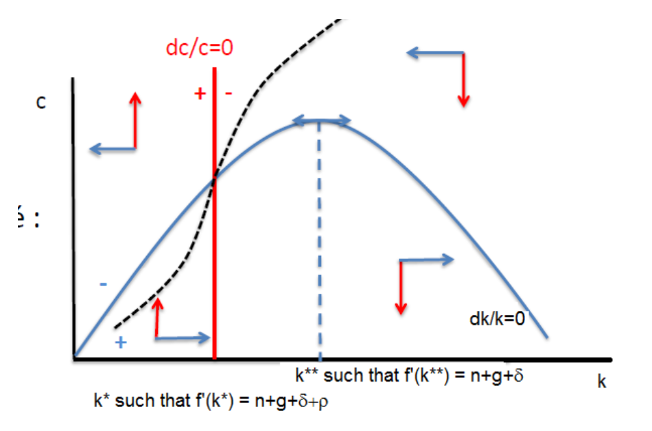

The Ramsey Model
Endogenous saving, preferences, the Hamiltonian, and optimal consumption dynamics.
Why an Endogenous Saving Rate?
In the Solow model, the saving rate $s$ is assumed to be exogenous and constant: households mechanically save a fixed fraction $s$ of their income regardless of interest rates, wages, or future expectations.
- There is no imposed constant saving rate $s$.
- Households choose their consumption path $c(t)$ optimally over time.
- Saving becomes endogenous: it is determined residually through the household's consumption decision.
To model forward-looking households making intertemporal choices, the Ramsey framework introduces two essential preference parameters:
Measures impatience. A higher $\rho$ means households value present consumption relatively more compared with future consumption. Future utility is discounted at rate $\rho$.
Governs the concavity of the utility function. The intertemporal elasticity of substitution is: $$\text{IES} = \frac{1}{\varepsilon}$$
• High $\varepsilon$ (low $\text{IES}$): The household strongly dislikes fluctuations in living standards across time. It is less willing to substitute consumption across periods and insists on a very smooth consumption profile.
• Low $\varepsilon$ (high $\text{IES}$): The household is more willing to shift consumption between periods in response to economic incentives (such as a high return to capital).
Household Instantaneous Utility Function $u(c)$
We consider a representative household that derives satisfaction from consumption per effective worker:
The Instantaneous Utility Function
In the Ramsey model, the instantaneous utility function is:
Explicit Derivation of Derivatives
Standard Neoclassical Characteristics Satisfied
Positive marginal utility: More consumption always yields higher satisfaction.
Decreasing marginal utility: Each additional unit of consumption yields less extra utility than the previous one.
Inada condition at 0: $\lim_{c \to 0} c^{-\varepsilon} = \infty$. The first drop of consumption is infinitely valuable, so households will never choose $c = 0$.
Inada condition at $\infty$: $\lim_{c \to \infty} c^{-\varepsilon} = 0$. As consumption approaches infinity, additional satisfaction approaches zero.
Intertemporal Utility Function $W$
Households do not simply maximise utility in a single period: they are forward-looking and evaluate an entire trajectory of consumption $\{c(t)\}_{t \ge 0}$ from the present into the indefinite future:
Understanding Every Component of the Integral
Substituting the Utility Function into $W$
Substituting this utility function gives the intertemporal objective used in the dynamic problem:
The Economy: Production & Capital Accumulation
The technology and demographic setting of the Ramsey model are identical to the Solow model with technological progress:
Production per Effective Worker
The Ramsey Resource Constraint: Gross Investment vs. Break-Even Investment
Since output per effective worker is $k(t)^\alpha$ and households consume $c(t)$, what is left is channelled into gross investment:
To maintain capital per effective worker $k(t)$ constant, the economy requires break-even investment:
Therefore, net capital accumulation is simply:
Rearranging gives the central equation of capital accumulation:
Dynamic Optimisation: Control Variable vs. State Variable
Before solving the dynamic problem, we must clearly distinguish the two economic variables that govern the household's environment:
| Variable Type | Symbol | Economic Meaning & Dynamic Nature |
|---|---|---|
| CONTROL VARIABLE | $$c(t)$$ |
Chosen directly and instantaneously:
At any point in time $t$, the household can freely decide how much to consume right now. It can jump discontinuously if economic conditions or expectations change. |
| STATE VARIABLE | $$k(t)$$ |
Inherited and predetermined:
The capital stock is inherited from previous investment decisions ($k(0)$ is historically given). It cannot jump instantaneously; it changes smoothly over time according to the capital accumulation differential equation: $$\frac{dk}{dt} = k(t)^\alpha - c(t) - (n + \delta + g_A)k(t)$$ |
Solving the Ramsey Model (1/3) — The Hamiltonian & FOCs
We are looking for the optimal consumption path: how much to consume now and at each future date, given the initial capital stock and the capital accumulation equation. The household evaluates this path using its preference parameters: $\rho$ determines how future utility is discounted, while $\varepsilon$ determines the curvature of utility and the intertemporal elasticity of substitution $1/\varepsilon$.
Consumption must therefore satisfy both the household’s preferences and the economy’s resource constraint. For $\varepsilon\ne1$, the programme is:
The Current-Value Hamiltonian
We set up the Hamiltonian by adding the instantaneous utility and the product of the multiplier $\lambda$ with the capital accumulation rate $\dfrac{dk(t)}{dt}$:
• Notice that the expression inside the brackets is exactly $\mathbf{\dfrac{dk(t)}{dt}}$.
• $\lambda$ is the shadow price of capital: the value, in units of utility, of an additional unit of capital per effective worker. It is the multiplier attached to the accumulation equation, not a price quoted in money.
Two Types of First-Order Conditions
Since $c$ is chosen freely at every instant, we set the derivative of $\mathcal{H}$ with respect to $c$ to zero:
Differentiating explicitly:
$$\frac{\partial \mathcal{H}}{\partial c} = c^{-\varepsilon} - \lambda = 0$$At a given capital stock, investing one more unit requires reducing current consumption by one unit: consumption enters the accumulation equation with a minus sign. The marginal utility forgone is $u'(c)$; the value of the additional investment is $\lambda$.
At the optimum, these two values must be equal. The shadow price of capital equals the marginal utility of consumption:
If the two values differed, a marginal reallocation between consumption and investment would improve the household’s objective. This equality is the condition on the control variable $c$.
⚠️ Do NOT set $\dfrac{\partial \mathcal{H}}{\partial k} = 0$!
Because $k$ is a state variable (its level is predetermined and evolves over time), its optimality condition is dynamic and describes how the shadow value $\lambda$ changes over time:
First, compute the partial derivative of $\mathcal{H}$ with respect to $k$:
$$\frac{\partial \mathcal{H}}{\partial k} = \lambda\left[\alpha k^{\alpha-1} - (n + \delta + g_A)\right]$$Substituting into the dynamic state-variable condition gives:
or equivalently written as:
Divide the capital condition by $\lambda$ to express it as a rate of return:
The first term is the net contribution of capital to production, $\alpha k^{\alpha-1}-(n+\delta+g_A)$. The second is the proportional change in its shadow price: a gain if $\lambda$ rises, a loss if it falls.
At the optimum, the total return on an additional unit of capital must equal the household’s required rate of return, its rate of time preference $\rho$. This is the condition on the state variable $k$. Here “return” includes both the productive return and the change in the value of capital.
The product $\lambda k$ is the shadow value of the remaining capital stock, and $e^{-\rho t}$ discounts that value to the present. Over the infinite horizon, this discounted value must tend to zero: the household must not leave resources with a positive terminal discounted value unconsumed.
This does not mean that $k$ itself must tend to zero. The condition concerns $e^{-\rho t}\lambda k$. The requirement that physical capital cannot be negative is a feasibility restriction, $k\ge0$, rather than a separate conclusion of the transversality condition.
Initial capital $k(0)$ is given, but initial consumption is a choice. The Euler equation describes how consumption changes; it does not, by itself, fix the starting level $c_0$.
The transversality condition helps select the consumption path, and therefore its initial value, jointly with the accumulation equation and the given initial capital stock. It is not a standalone formula for calculating $c_0$. Finding steady-state capital and consumption below does not yet give initial consumption for an economy that starts away from that steady state.
Solving the Ramsey Model (2/3) — The Ramsey Euler Equation
By combining the control-variable condition $\lambda = c^{-\varepsilon}$ and the state-variable condition, we derive the Ramsey Euler Equation governing optimal consumption growth.
• $\alpha k^{\alpha-1}$ is the marginal product of capital ($f'(k)$), representing the gross return to saving.
• $n + \delta + g_A$ are the break-even terms that capital must offset.
• $\rho$ is the rate of impatience (psychological cost of waiting).
• $\dfrac{1}{\varepsilon} = \text{IES}$ is the intertemporal elasticity of substitution, determining how strongly consumption growth responds to the net return to saving.
Solving the Ramsey Model (3/3) — The Steady State & Complete System
At the Ramsey steady state, both per-effective-worker variables must be stationary. The steady state requires two simultaneous conditions:
1. Determining Steady-State Capital $k^*$ (From the Euler Equation)
Setting $g_c = 0$ in the Euler equation gives:
Solving explicitly for $k^*$ under Cobb-Douglas production:
This $k^*$ is the level of capital per effective worker for which the Euler equation gives $g_c=0$. At that capital level, consumption per effective worker has zero instantaneous growth. To remain at a steady state, capital must also stop changing; the accumulation equation below supplies the corresponding $c^*$.
2. Determining Steady-State Consumption $c^*$ (From Capital Accumulation)
Setting $\dfrac{dk}{dt} = 0$ in the capital accumulation equation ensures the capital stock does not change:
Note: $\dfrac{dc}{dt} = 0$ alone is not sufficient to define the steady state; $\dfrac{dk}{dt} = 0$ is equally required for the full macroeconomic equilibrium.
• Solow Golden Rule: $f'(k^{**}) = n + \delta + g_A$
• Ramsey Steady State: $f'(k^*) = \rho + n + \delta + g_A$
The difference is the additional $\rho$ in the Ramsey denominator. With $\rho>0$, the household discounts future utility, so its optimal steady-state capital is below the Golden Rule level.
Since households are impatient ($\rho > 0$), we have: $$f'(k^*) > f'(k^{**})$$ Because the production function exhibits strictly diminishing returns to capital ($f''(k) < 0$), a higher marginal product implies a strictly lower capital stock:
Dynamic Efficiency: In the Solow model, an economy could accumulate too much capital ($k^* > k^{**}$ if $s > \alpha$), wasting output in unproductive investment (dynamic inefficiency). In the Ramsey model, forward-looking households choose consumption optimally and will never over-accumulate capital beyond the Golden Rule: $k^* < k^{**}$ holds endogenously because $\rho > 0$.
Complete Dynamic System at the Optimum
Synthesis: Solow Model vs. Ramsey Model
| Feature | Solow Model (Chapter 1a) | Ramsey Model (Chapter 1b) |
|---|---|---|
| Saving Rate | Exogenous and constant ($s$) | Endogenous, implied residually by consumption ($i(t) = y(t) - c(t)$) |
| Household Behaviour | Mechanical saving rule ($S = sY$) | Intertemporal utility maximisation ($\max W$) |
| Preference Parameters | None (no utility function) | Impatience $\rho > 0$, Curvature $\varepsilon > 0$ ($\text{IES} = 1/\varepsilon$) |
| Dynamic Variables | Only capital per worker $k(t)$ | Control variable $c(t)$, State variable $k(t)$ |
| Steady-State Capital Condition | $s(k^*)^\alpha = (n + \delta + g_A)k^*$ | $\alpha(k^*)^{\alpha-1} = \rho + n + \delta + g_A$ |
| Dynamic Inefficiency | Possible if $s > \alpha$ ($k^* > k^{**}$) | Impossible ($k^* < k^{**}$ always because $\rho > 0$) |
| Long-run Growth ($Y/L$) | Technological progress rate $g_A$ | Technological progress rate $g_A$ |
How to draw and read the Ramsey saddle path
A phase diagram puts capital per effective worker $k=K/(AL)$ on the horizontal axis and consumption per effective worker $c=C/(AL)$ on the vertical axis. A point describes the economy’s current position; arrows show how that position moves over time.

The labels “dc/c = 0” and “dk/k = 0” refer to zero growth rates: $(dc(t)/dt)/c=0$ and $(dk(t)/dt)/k=0$. For positive $c$ and $k$, these are equivalent to $dc(t)/dt=0$ and $dk(t)/dt=0$. The handwritten accumulation equation needs the final factor $k$ in $(n+\delta+g_A)k$.
Draw the red vertical line: consumption does not change
Set $g_c=0$. This fixes a capital level, regardless of the current level of consumption, so the line is vertical:
To the left: ↑. Capital is lower and its marginal product is higher, so $g_c>0$ and consumption rises. To the right: ↓. The marginal product is lower, so $g_c<0$ and consumption falls. Red arrows are therefore vertical.
Draw the blue curve: capital does not change
Set $dk(t)/dt=0$ and isolate consumption. This gives the hump-shaped blue curve:
Below the curve: →. Consumption leaves enough output to increase capital, so $dk(t)/dt>0$. Above the curve: ←. Consumption is higher than the amount consistent with a constant capital stock, so $dk(t)/dt<0$. Blue arrows are therefore horizontal.
The top of the blue curve is at the Golden Rule capital level $k^{**}$, where $f'(k^{**})=n+\delta+g_A$. It lies to the right of $k^*$ because $\rho>0$. The dashed blue vertical guide under that peak marks $k^{**}$; it is not the consumption-growth-zero line.
Place the four pairs of arrows
For each region, answer two separate questions: left or right of the red line? This gives the vertical arrow. Above or below the blue curve? This gives the horizontal arrow.
| Position | Blue: capital | Red: consumption | Combined movement |
|---|---|---|---|
| Left of red; above blue | ← decreases | ↑ increases | ↖ |
| Left of red; below blue | → increases | ↑ increases | ↗ |
| Right of red; above blue | ← decreases | ↓ decreases | ↙ |
| Right of red; below blue | → increases | ↓ decreases | ↘ |
Locate the steady state, then draw the saddle path
The red line and blue curve intersect at $E=(k^*,c^*)$. Both capital and consumption stop changing there. The black dashed curve in your original diagram is the saddle path: the optimal consumption level associated with each initial capital stock, leading toward $E$ under the model’s optimality and terminal conditions.
To the left of $E$, this path lies below the blue curve: both $k$ and $c$ rise toward the steady state. To the right, it lies above the blue curve: both fall toward it. Draw the path through $E$ with arrows toward the intersection. The four directional regions guide its placement; they do not determine its exact curvature by themselves.
Given $k(0)$, the household chooses $c_0$ on this path. Capital is inherited; consumption can adjust immediately. Satisfying the Euler equation at a point is not enough to guarantee a feasible, optimal infinite-horizon path: the accumulation equation and transversality condition must also hold.
Half the capital stock is lost
Start at the steady state. An unexpected, one-off shock destroys half of total capital $K$, while $A$, $L$ and all model parameters stay unchanged. Immediately after the shock:
The shock changes the current capital stock, not $\alpha$, $\rho$, $n$, $\delta$ or $g_A$. Neither zero-change curve moves, and the steady state remains $E=(k^*,c^*)$.
1 · The impact
The dotted horizontal move from $E$ to $P$ isolates the loss of capital, holding consumption at its old level only as a reference. It is not the optimal post-shock allocation.
2 · The consumption choice
At the new $k^*/2$, consumption adjusts down to $B$, on the unchanged saddle path. The dotted vertical segment shows that choice. $P$ is a graphical decomposition of the shock, not a period during which consumption must stay fixed.
3 · The transition
From $B$, the economy is left of the red line and below the blue curve. Capital accumulates and consumption rises. The green route returns toward the original $E$.
Optimal and feasible?
The loss is an imposed shock, not an optimal decision. The path starting at $B$ is the optimal feasible response to the reduced capital stock. Keeping the old consumption level is not that response. Being above the blue curve means capital falls; it does not, by itself, prove that an allocation is immediately infeasible.
Generated illustration from the chapter’s equations. Axes are normalized by the original steady state: $k/k^*$ and $c/c^*$. The original steady state is therefore at $(1,1)$.
One million additional people — with unchanged population growth
Interpret the arrival as a one-off increase in the model’s labour force $L$, with no capital brought in and no immediate change in $A$. After the arrival, $L$ again grows at the original rate $n$. This is a level change in $L$, not a permanent increase in $n$.
The same capital stock is spread over more effective workers, so $k$ falls. The size of this fall depends on the starting labour force. The adjustable value below is an illustration, not a number supplied in the course.
One-off arrival: +1 million. The rate $n$ stays fixed.
What changes on impact?
$L$ and $AL$ increase, while $K$ is initially fixed. The point moves to a lower $k$. If total consumption $C$ were momentarily held fixed too, $c=C/(AL)$ would fall in the same proportion: this is the dotted reference point $P$.
What can adjust immediately?
Consumption is a choice. At the new capital level, the household selects the saddle-path value at $B$, rather than being required to keep total consumption fixed. The dotted move from $P$ to $B$ separates that choice from the mechanical change in the ratios.
Does the steady state move?
No. Since $n$ and the other parameters are unchanged, the red line, blue curve and saddle path remain in place. The economy returns toward the same $k^*$ and $c^*$.
A larger economy, the same long-run output per effective worker
During the transition, $Y/(AL)=k^\alpha$ differs from its steady-state value. It returns to $(k^*)^\alpha$. Once adjustment is complete, total output $Y$ is larger than in the no-arrival comparison because the economy has more effective workers.
That graph is labelled “increase in $n$”. A permanent rise in the population growth rate is a parameter change: it moves the red line left and lowers the blue curve, giving a lower steady-state $k$ and $c$. It is therefore not the diagram for a one-off arrival with $n$ unchanged.
A shock to the current stock or level moves the economy’s position. A change in a parameter entering the steady-state equations can move the steady state itself. In these two simulations, the position changes and the curves do not.
Both simulations use the same illustrative parameters: $\alpha=0.35$, $\rho=0.04$, $\varepsilon=2$, $n=0.015$, $\delta=0.04$, $g_A=0.015$. The saddle path is computed from the chapter’s dynamic equations. The slider traces the route; its percentage is not a number of years.